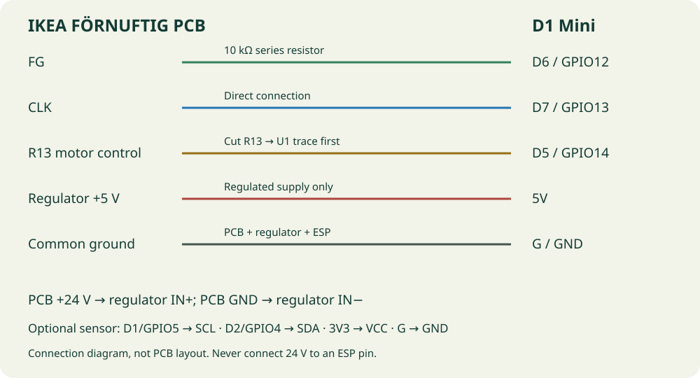

AIR & ENVIRONMENT / BUILD GUIDE
IKEA FÖRNUFTIG.
A smarter breath of air.
Six fan speeds in Home Assistant, motor feedback and a configurable filter reminder. Built around a WEMOS D1 Mini.
Experimental YAML validation is automated. Hardware operation still needs verification on your PCB revision; no browser firmware is published for this project.
Make the connections
Disconnect the original power adapter before modifying the board. Use a regulator rated for 24 V input and regulated 5 V output. Never connect the 24 V supply to the ESP’s 5V, 3V3 or GPIO pins. Measure its output before connecting the ESP.

| Connection | Wiring | D1 Mini |
|---|---|---|
| FG | 10 kΩ series resistor | D6 / GPIO12 |
| CLK | Direct connection | D7 / GPIO13 |
| R13 motor control | Cut R13 → U1 trace first | D5 / GPIO14 |
| Regulator +5 V | Regulated supply only | 5V |
| Common ground | PCB + regulator + ESP | G / GND |
Cut the trace between the top of R13 and U1 before connecting D5. This modification replaces the original speed knob, filter reset button and filter LED control. Check the original guide’s board photos before soldering.
Configure your device
- Download or clone this repository. Install Python and
pip install -r requirements-dev.txt. - Generate a personal configuration:
python scripts/secure_setup.py ikea_fornuftig --name fornuftig-livingroom - Edit Wi-Fi details in
esphome/private/fornuftig-livingroom/secrets.yaml. The generator supplies unique API encryption and OTA credentials. - Flash over USB:
esphome run esphome/private/fornuftig-livingroom/device.yaml - Check that startup leaves the motor off. Test each speed, stop, feedback and restart before closing the housing. Add the discovered ESPHome device to Home Assistant with its generated encryption key.
The fan starts off after every restart. Feedback is reported as pulses per minute, since the motor’s pulses per revolution have not been verified. The filter counter accumulates minutes with motor feedback; it is saved every five minutes. A sudden power loss can lose recent runtime.
The default reminder is 4,320 running hours. Adjust fornuftig_filter_hours in your personal substitutions. This is a maintenance estimate, not measured filter contamination. Use “Reset filter runtime” after replacing the filter.
The device YAML
This is the device package. The complete configuration above includes it together with the shared settings. Wi-Fi and credentials belong in your personal configuration.
View fan control and filter runtime YAML
# Pin mapping: https://edvoncken.net/2024/04/ikea-fornuftig-with-esphome/
# Hardware modification originally demonstrated by https://github.com/3ative/ikea-air-filter
# Experimental: verify the PCB revision and wiring before connecting power.
substitutions:
fornuftig_filter_hours: "4320" # Configurable reminder, not a dust measurement.
preferences:
flash_write_interval: 5min
globals:
- id: fornuftig_runtime_minutes
type: uint32_t
restore_value: true
initial_value: '0'
output:
- platform: gpio
id: fornuftig_motor_enable
pin: GPIO14 # D5 -> top of R13; cut the trace to U1 first.
- platform: esp8266_pwm
id: fornuftig_clock
pin: GPIO13 # D7 -> CLK
frequency: 50 Hz
- platform: template
id: fornuftig_speed_output
type: float
write_action:
- if:
condition:
lambda: return state > 0.0f;
then:
- output.esp8266_pwm.set_frequency:
id: fornuftig_clock
frequency: !lambda return roundf(state * 6.0f) * 50.0f;
- output.set_level:
id: fornuftig_clock
level: 50%
- output.turn_on: fornuftig_motor_enable
else:
- output.turn_off: fornuftig_motor_enable
- output.turn_off: fornuftig_clock
fan:
- platform: speed
id: fornuftig_fan
name: "${device_name} Fan"
output: fornuftig_speed_output
speed_count: 6
restore_mode: ALWAYS_OFF
sensor:
- platform: pulse_counter
id: fornuftig_feedback
name: "${device_name} Fan feedback"
pin: GPIO12 # D6 -> FG through a series 10 kOhm resistor.
count_mode:
rising_edge: INCREMENT
falling_edge: DISABLE
update_interval: 10s
unit_of_measurement: "pulses/min"
accuracy_decimals: 0
entity_category: diagnostic
- platform: template
name: "${device_name} Filter runtime"
id: fornuftig_runtime
unit_of_measurement: h
accuracy_decimals: 1
state_class: total_increasing
update_interval: 60s
lambda: return id(fornuftig_runtime_minutes) / 60.0f;
interval:
- interval: 60s
then:
- lambda: |-
// Count only minutes with a running fan and valid motor feedback.
if (id(fornuftig_fan).state &&
!isnan(id(fornuftig_feedback).state) && id(fornuftig_feedback).state > 0) {
id(fornuftig_runtime_minutes) += 1;
}
binary_sensor:
- platform: template
name: "${device_name} Filter reminder"
device_class: problem
lambda: return id(fornuftig_runtime_minutes) >= ${fornuftig_filter_hours}UL * 60UL;
button:
- platform: template
name: "${device_name} Reset filter runtime"
entity_category: config
on_press:
- globals.set:
id: fornuftig_runtime_minutes
value: '0'
- sensor.template.publish:
id: fornuftig_runtime
state: 0
Add a BME680, optionally
The fan works without an environmental sensor. To add a BME680, connect its 3.3 V supply and I²C pins as shown above, then add this package beside your existing package in the generated personal configuration:
packages:
device: !include ../../ikea_fornuftig.yaml
air_sensor: !include ../../package/ikea_fornuftig_bme680.yamlThis standard driver reports temperature, humidity, pressure and gas resistance. It does not calculate IAQ or CO₂ equivalent as the article’s Bosch BSEC library does. Check whether your breakout uses address 0x77 or 0x76.
View optional BME680 YAML
# Optional BME680. Include this package only when the sensor is connected.
# D1/GPIO5 -> SCL, D2/GPIO4 -> SDA, 3V3 -> VCC, G -> GND.
# Standard driver: gas resistance is not a CO2 measurement or an IAQ index.
i2c:
scl: GPIO5
sda: GPIO4
scan: true
sensor:
- platform: bme680
address: 0x77 # Change to 0x76 if required by your breakout.
temperature:
name: "${device_name} Temperature"
pressure:
name: "${device_name} Pressure"
humidity:
name: "${device_name} Humidity"
gas_resistance:
name: "${device_name} Gas resistance"
update_interval: 60s
Credit & original build
Hardware mapping: Ed Voncken’s FÖRNUFTIG article and PCB photos, following David Martin / 3ATIVE’s original project. This repository provides a new ESPHome implementation with a native fan entity and runtime-based maintenance reminder.